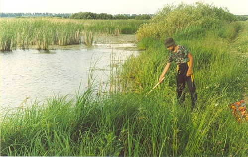
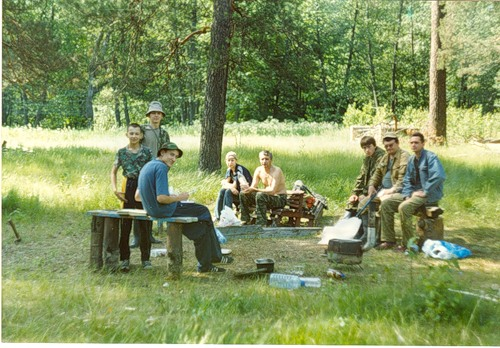
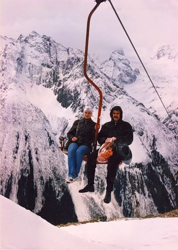

| |
2004 год

Взятие проб зообентоса

Участники эколагеря. Траханиотово

Чегет. С победителем всероссийской олимпиады Каратеевой Анной
|
Был впервые проведен выездной экологический палаточный лагерь на двух стационарных площадках.
Первая стоянка проводилась на территории бывшего детского загородного лагеря отдыха «Дружба» в окрестности села Траханиотово Кузнецкого района. В лагере проводились занятия по методам экологических исследований, а также сбор практического материала – отлов мелких млекопитающих, сбор насекомых, учёт птиц.
Вторая стоянка проводилась на берегу Селитьбинского болота с целью сбора практического материала для оологического анализа и морфологических особенностей птиц, отлов мелких млекопитающих, сбор насекомых, взятие проб зообентоса и зоопланктона, сбор экземпляров мхов.
В составе участников – учащиеся школ города Кузнецка, студенты и преподаватели ПГПУ им В.Г. Белинского, руководитель Иванов С.В. Впервые был проведен анализ воды водоемов Кузнецкого района по составу зообентоса и зоопланктона.
В окрестности г. Кузнецка проводился сбор практического материала отдельными учащимися вместе со своими руководителями.
В марте 2005 года учащаяся экологической школы (гимназия № 9) Каратеева Анна стала победителем Всероссийской олимпиады по экологии в г. Кисловодске.
2001 год
2002 год
2003 год
2005 год
2006 год
2007 год
2008 год
2009 год
| |


{kind=link}
{kind=link}
{kind=link}
{kind=link}
{kind=link}